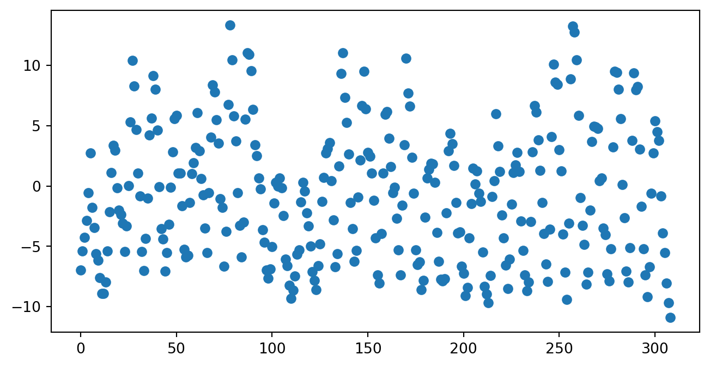
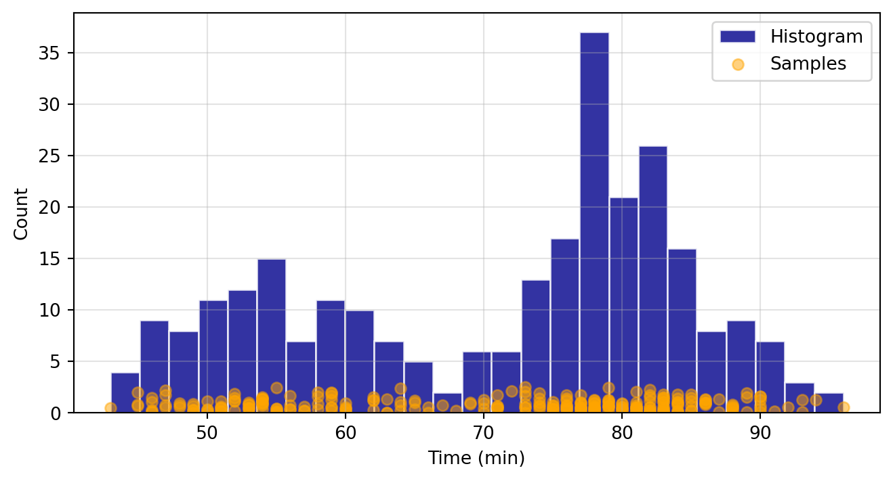
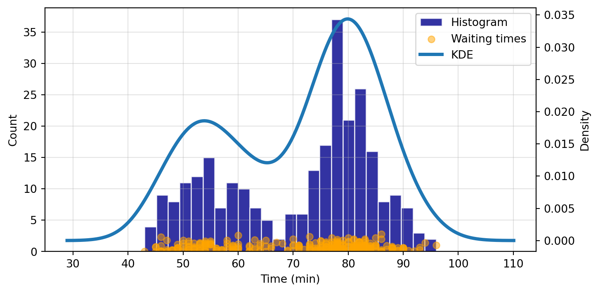
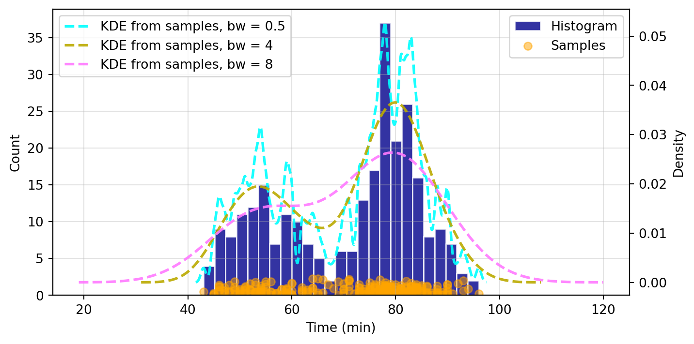

import numpy as np
import pandas as pd
import statsmodels.api as sm
import statsmodels.formula.api as smf
import matplotlib.pyplot as plt9 Statistical Models
9.1 Introduction
Statistical modeling is a cornerstone of data science, offering tools to understand complex relationships within data and to make predictions. Python, with its rich ecosystem for data analysis, features the statsmodels package— a comprehensive library designed for statistical modeling, tests, and data exploration. statsmodels stands out for its focus on classical statistical models and compatibility with the Python scientific stack (numpy, scipy, pandas).
9.1.1 Installation of statsmodels
To start with statistical modeling, ensure statsmodels is installed:
Using pip:
pip install statsmodels9.1.2 Features of statsmodels
Package statsmodels offers a comprehensive range of statistical models and tests, making it a powerful tool for a wide array of data analysis tasks:
Linear Regression Models: Essential for predicting quantitative responses, these models form the backbone of many statistical analysis operations.
Generalized Linear Models (GLM): Expanding upon linear models, GLMs allow for response variables that have error distribution models other than a normal distribution, catering to a broader set of data characteristics.
Time Series Analysis: This includes models like ARIMA for analyzing and forecasting time-series data, as well as more complex state space models and seasonal decompositions.
Nonparametric Methods: For data that does not fit a standard distribution,
statsmodelsprovides tools like kernel density estimation and smoothing techniques.Statistical Tests: A suite of hypothesis testing tools allows users to rigorously evaluate their models and assumptions, including diagnostics for model evaluation.
Integrating statsmodels into your data science workflow enriches your analytical capabilities, allowing for both exploratory data analysis and complex statistical modeling.
9.2 Generalized Linear Models
Generalized Linear Models (GLM) extend the classical linear regression to accommodate response variables, that follow distributions other than the normal distribution. GLMs consist of three main components:
- Random Component: This specifies the distribution of the response variable \(Y\). It is assumed to be from the exponential family of distributions, such as Binomial for binary data and Poisson for count data.
- Systematic Component: This consists of the linear predictor, a linear combination of unknown parameters and explanatory variables. It is denoted as \(\eta = X\beta\), where \(X\) represents the explanatory variables, and \(\beta\) represents the coefficients.
- Link Function: The link function, \(g\), provides the relationship between the linear predictor and the mean of the distribution function. For a GLM, the mean of \(Y\) is related to the linear predictor through the link function as \(\mu = g^{-1}(\eta)\).
Generalized Linear Models (GLM) adapt to various data types through the selection of appropriate link functions and probability distributions. Here, we outline four special cases of GLM: normal regression, logistic regression, Poisson regression, and gamma regression.
- Normal Regression (Linear Regression). In normal regression, the response variable has a normal distribution. The identity link function (\(g(\mu) = \mu\)) is typically used, making this case equivalent to classical linear regression.
- Use Case: Modeling continuous data where residuals are normally distributed.
- Link Function: Identity (\(g(\mu) = \mu\))
- Distribution: Normal
- Logistic Regression. Logistic regression is used for binary response variables. It employs the logit link function to model the probability that an observation falls into one of two categories.
- Use Case: Binary outcomes (e.g., success/failure).
- Link Function: Logit (\(g(\mu) = \log\frac{\mu}{1-\mu}\))
- Distribution: Binomial
- Poisson Regression. Poisson regression models count data using the Poisson distribution. It’s ideal for modeling the rate at which events occur.
- Use Case: Count data, such as the number of occurrences of an event.
- Link Function: Log (\(g(\mu) = \log(\mu)\))
- Distribution: Poisson
- Gamma Regression. Gamma regression is suited for modeling positive continuous variables, especially when data are skewed and variance increases with the mean.
- Use Case: Positive continuous outcomes with non-constant variance.
- Link Function: Inverse (\(g(\mu) = \frac{1}{\mu}\))
- Distribution: Gamma
Each GLM variant addresses specific types of data and research questions, enabling precise modeling and inference based on the underlying data distribution.
9.3 Statistical Modeling with statsmodels
This section was written by Leon Nguyen.
9.3.1 Introduction
Hello! My name is Leon Nguyen (they/she) and I am a second-year undergraduate student studying Statistical Data Science and Mathematics at the University of Connecticut, aiming to graduate in Fall 2025. One of my long-term goals is to make the field of data science more accessible to marginalized communities and minority demographics. My research interests include data visualization and design. Statistical modeling is one of the most fundamental skills required for data science, and it’s important to have a solid understanding of how models work for interpretable results.
The statsmodels Python package offers a diverse range of classes and functions tailored for estimating various statistical models, conducting statistical tests, and exploring statistical data. Each estimator provides an extensive array of result statistics, rigorously tested against established statistical packages to ensure accuracy. This presentation will focus on the practical applications of the statistical modeling aspect.
9.3.2 Key Features and Capabilities
Some key features and capabilities of statsmodels are:
- Generalized Linear Models
- Diagnostic Tests
- Nonparametric methods
In this presentation, we will work with practical applications of statistical modeling in statsmodels. We will briefly cover how to set up linear, logistic, and Poisson regression models, and touch upon kernel density estimation and diagnostics. By the end of this presentation, you should be able to understand how to use statsmodels to analyze your own datasets using these fundamental techniques.
9.3.3 Installation and Setup
To install statsmodels, use pip install statsmodels or conda install statsmodels, depending on whether you are using pip or conda.
One of the major benefits of using statsmodels is their compatability with other commnonly used packages, such as NumPy, SciPy, and Pandas. These packages provide foundational scientific computing functionalities that are crucial for working with statsmodels. To ensure everything is set up correctly, import the necessary libraries at the beginning of your script:
Here are some minimum dependencies:
- Python >= 3.8
- NumPy >= 1.18
- SciPy >= 1.4
- Pandas >= 1.0
- Patsy >= 0.5.2
The last item listed above, patsy, is a Python library that provides simple syntax for specifying statistical models in Python. It allows users to define linear models using a formula syntax similar to the formulas used in R and other statistical software. More patsy documentation can be found here. This library is not used this demonstration, but is still worth noting.
9.3.4 Importing Data
There are a few different options to import data. For example, statsmodels documentation demonstrates how to importing from a CSV file hosted online from the Rdatasets repository:
# Reads the 'avocado' dataset from the causaldata package into df
df0 = sm.datasets.get_rdataset(dataname='avocado', package="causaldata").data
# We will be using this dataset later!
# Print out the first five rows of our dataframe
print(df0.head()) Date AveragePrice TotalVolume
0 2015-12-27 0.90 5040365.47
1 2015-12-20 0.94 4695737.21
2 2015-12-13 0.87 5259354.30
3 2015-12-06 0.78 5775536.27
4 2015-11-29 0.91 4575710.62We can also read directly from a local CSV file with pandas. For example, we will be using the NYC 311 request rodent data:
# Reads the csv file into df
df = pd.read_csv('data/rodent_2022-2023.csv')
# Brief data pre-processing
# Time reformatting
df['Created Date'] = pd.to_datetime(df['Created Date'], format = "%m/%d/%Y %I:%M:%S %p")
df['Closed Date'] = pd.to_datetime(df['Closed Date'], format = "%m/%d/%Y %I:%M:%S %p")
df['Created Year'] = df['Created Date'].dt.year
df['Created Month'] = df['Created Date'].dt.month
# Response time
df['Response Time'] = df['Closed Date'] - df['Created Date']
df['Response Time'] = df['Response Time'].apply(lambda x: x.total_seconds() / 3600) # in hours
# Remove unspecified borough rows
df = df.drop(df[df['Borough']=='Unspecified'].index)
# Remove 'other' open data channel type rows
df = df.drop(df[df['Open Data Channel Type']=='OTHER'].index)
print(df.head()) Unique Key Created Date Closed Date Agency \
0 59893776 2023-12-31 23:05:41 2023-12-31 23:05:41 DOHMH
1 59887523 2023-12-31 22:19:22 2024-01-03 08:47:02 DOHMH
2 59891998 2023-12-31 22:03:12 2023-12-31 22:03:12 DOHMH
3 59887520 2023-12-31 21:13:02 2024-01-03 09:33:43 DOHMH
4 59889297 2023-12-31 20:50:10 NaT DOHMH
Agency Name Complaint Type Descriptor \
0 Department of Health and Mental Hygiene Rodent Rat Sighting
1 Department of Health and Mental Hygiene Rodent Rat Sighting
2 Department of Health and Mental Hygiene Rodent Rat Sighting
3 Department of Health and Mental Hygiene Rodent Mouse Sighting
4 Department of Health and Mental Hygiene Rodent Rat Sighting
Location Type Incident Zip Incident Address ... \
0 3+ Family Apt. Building 11216 265 PUTNAM AVENUE ...
1 Commercial Building 10028 1538 THIRD AVENUE ...
2 3+ Family Apt. Building 10458 2489 TIEBOUT AVENUE ...
3 3+ Family Apt. Building 11206 116 JEFFERSON STREET ...
4 1-2 Family Dwelling 11206 114 ELLERY STREET ...
Location Zip Codes Community Districts \
0 (40.683855196486164, -73.95164557951071) 17618.0 69.0
1 (40.77924175816874, -73.95368859796383) 10099.0 23.0
2 (40.861693023118924, -73.89499228560491) 10936.0 6.0
3 (40.69974221739347, -73.93073474327662) 17213.0 42.0
4 (40.69844506428295, -73.94858040356128) 17213.0 69.0
Borough Boundaries City Council Districts Police Precincts Police Precinct \
0 2.0 49.0 51.0 51.0
1 4.0 1.0 11.0 11.0
2 5.0 22.0 29.0 29.0
3 2.0 30.0 53.0 53.0
4 2.0 49.0 51.0 51.0
Created Year Created Month Response Time
0 2023 12 0.000000
1 2023 12 58.461111
2 2023 12 0.000000
3 2023 12 60.344722
4 2023 12 NaN
[5 rows x 50 columns]9.3.5 Troubleshooting
Whenever you are having problems with statsmodels, you can access the official documentation by visiting this link. If you are working in a code editor, you can also run the following in a code cell:
sm.webdoc()
# Opens the official documentation page in your browserTo look for specific documentation, for example sm.GLS, you can run the following:
sm.webdoc(func=sm.GLS, stable=True)
# func : string* or function to search for documentation
# stable : (True) or development (False) documentation, default is stable
# *Searching via string has presented issues?9.3.6 Statistical Modeling and Analysis
Constructing statistical models with statsmodels generally follows a step-by-step process:
Import necessary libraries: This includes both
numpyandpandas, as well asstatsmodels.apiitself (sm).Load the data: This could be data from the
rdatasetrepository, local csv files, or other formats. In general, it’s best practice to load your data into apandasDataFrame so that it can easily be manipulated usingpandasfunctions.Prepare the data: This involves converting variables into appropriate types (e.g., categorical into factors), handling missing values, and creating appropriate interaction terms.
Define our model: what model is the appropriate representation of our research question? This could be an OLS regression (
sm.OLS), logistic regression (sm.Logit), or any number of other models depending on the nature of our data.Fit the model to our data: we use the
.fit()method which takes as input our dependent variable and independent variables.Analyze the results of the model: this is where we can get things like parameter estimates, standard errors, p-values, etc. We use the
.summary()method to print out these statistics.
9.3.7 Generalized Linear Models
GLM models allow us to construct a linear relationship between the response and predictors, even if their underlying relationship is not linear. This is done via a link function, which is a transformation which links the response variable to a linear model.
Key points of GLMs:
- Data should be independent and random.
- The response variable \(Y\) does not need to be normally distributed, but the distribution is from an exponential family (e.g. binomial, Poisson, normal).
- GLMs do not assume a linear relationship between the response variable and the explanatory variables, but assume a linear relationship between the transformed expected response in terms of the link function and the explanatory variables.
- GLMs are useful when the range of your response variable is constrained and/or the variance is not constant or normally distributed.
- GLM models transform the response variable to allow the fit to be done by least squares. The transformation done on the response variable is defined by the link function.
9.3.7.1 Linear Regression
Simple and muliple linear regression are special cases where the expected value of the dependent value is equal to a linear combination of predictors. In other words, the link function is the identity function \(g[E(Y)]=E(Y)\). Make sure assumptions for linear regression hold before proceeding. The model for linear regression is given by: \[y_i = X_i\beta + \epsilon_i\] where \(X_i\) is a vector of predictors for individual \(i\), and \(\beta\) is a vector of coefficients that define this linear combination.
We will be working with the avocado dataset from the package causaldata which contains information about the average price and total amount of avocados that were sold in California from 2015-2018. AveragePrice of a single avocado is our predictor, and TotalVolume is our outcome variable as a count of avocados.
Here is an application of SLR with statsmodels:
# We can use .get_rdataset() to load data into Python from a repositiory of R packages.
df1 = sm.datasets.get_rdataset('avocado', package="causaldata").data
# Fit regression model
results1 = smf.ols('TotalVolume ~ AveragePrice', data=df1).fit()
# Analyze results
print(results1.summary()) OLS Regression Results
==============================================================================
Dep. Variable: TotalVolume R-squared: 0.441
Model: OLS Adj. R-squared: 0.438
Method: Least Squares F-statistic: 132.0
Date: Mon, 25 Mar 2024 Prob (F-statistic): 7.04e-23
Time: 16:27:18 Log-Likelihood: -2550.3
No. Observations: 169 AIC: 5105.
Df Residuals: 167 BIC: 5111.
Df Model: 1
Covariance Type: nonrobust
================================================================================
coef std err t P>|t| [0.025 0.975]
--------------------------------------------------------------------------------
Intercept 9.655e+06 3.3e+05 29.222 0.000 9e+06 1.03e+07
AveragePrice -3.362e+06 2.93e+05 -11.487 0.000 -3.94e+06 -2.78e+06
==============================================================================
Omnibus: 50.253 Durbin-Watson: 0.993
Prob(Omnibus): 0.000 Jarque-Bera (JB): 165.135
Skew: 1.135 Prob(JB): 1.38e-36
Kurtosis: 7.278 Cond. No. 9.83
==============================================================================
Notes:
[1] Standard Errors assume that the covariance matrix of the errors is correctly specified.We can interpret some values:
- coef: the coefficient of
AveragePricetells us how much adding one unit ofAveragePricechanges the predicted value ofTotalVolume. An important interpretation is that ifAveragePricewas to increase by one unit, on average we could expectTotalVolumeto change by this coefficient based on this linear model. This makes sense since higher prices should result in a smaller amount of avocados sold. - P>|t|: p-value to test significant effect of the predictor on the response, compared to a significance level \(\alpha=0.05\). When this p-value \(\leq \alpha\), we would reject the null hypothesis that there is no effect of
AveragePriceonTotalVolume, and conclude thatAveragePricehas a statistically significant effect onTotalVolume. - R-squared: indicates the proportion of variance explained by the predictors (in this case just
AveragePrice). If it’s close to 1 then most of the variability inTotalVolumeis explained byAveragePrice, which is good! However, only about 44.1% of the variability is explained, so this model could use some improvement. - Prob (F-statistic): indicates whether or not the linear regression model provides a better fit to a dataset than a model with no predictors. Assuming a significance level of 0.05, we would reject the null hypothesis (model with just the intercept does just as well with a model with predictors) since our F-value probability is less than 0.05. We know that
AveragePricegives at least some significant information aboutTotalVolume. (This makes more sense in MLR where you are considering multiple predictors.) - Skew: measures asymmetry of a distribution, which can be positive, negative, or zero. If skewness is positive, the distribution is more skewed to the right; if negative, then to the left. We ideally want a skew value of zero in a normal distribution.
- Kurtosis: a measure of whether or not a distribution is heavy-tailed or light-tailed relative to a normal distribution. For a normal distribution, we expect a kurtosis of 3. If our kurtosis is greater than 3, there are more outliers on the tails. If less than 3, then there are less.
- Prob (Jarque-Bera): indicates whether or not the residuals are normally distributed, which is required for the OLS linear regression model. In this case the test rejects the null hypothesis that the residuals come from a normal distribution. This is concerning because non-normality can lead to misleading conclusions and incorrect standard errors.
9.3.7.2 Logistic Regression
Logistic regression is used when the response variable is binary. The response distribution is logistic which means it has support (input) on \((0,1)\) and
is invertible. The log-odds link function is defined as \(\log\left(\frac{\mu}{1-\mu}\right)\), where \(\mu\) is the predicted probability.
Here we have an example from our rodents dataset, where the response variable Under 3h indicates whether the response time for a 311 service request was under 3 hours. 1 indicates that the response time is less than 3 hours, and 0 indications greater than or equal to 3 hours. We are creating a logistic regression model that can be used to estimate the odds ratio of 311 requests having a response time under 3 hours based on Borough and Open Data Channel Type (method of how 311 service request was submitted) as predictors.
# Loaded the dataset in a previous cell as df
# Create binary variable
df['Under 3h'] = (df['Response Time'] < 3).astype(int)
# Convert the categorical variable to dummy variables
df = df.loc[:, ['Borough', 'Open Data Channel Type', 'Under 3h']]
df = pd.get_dummies(df, dtype = int)
# Remove reference dummy variables
df.drop(
columns=['Borough_QUEENS', 'Open Data Channel Type_MOBILE'],
axis=1,
inplace=True
)For this regression to run properly, we needed to create \(k-1\) dummy variables with \(k\) levels in a given predictor. Here we have two categorical variables that we used pd.get_dummies() function to change from a categorical variable into dummy variables. We then dropped one dummy variable level from each category: 'Borough_QUEENS' and 'Open Data Channel Type_MOBILE'.
# Drop all rows with NaN values
df.dropna(inplace = True)
# Fit the logistic regression model using statsmodels
Y = df['Under 3h']
X = sm.add_constant(df.drop(columns = 'Under 3h', axis=1))
# need to consider constant manually
logitmod = sm.Logit(Y, X)
result = logitmod.fit(maxiter=30)
# Summary of the fitted model
print(result.summary())Optimization terminated successfully.
Current function value: 0.616020
Iterations 5
Logit Regression Results
==============================================================================
Dep. Variable: Under 3h No. Observations: 82846
Model: Logit Df Residuals: 82839
Method: MLE Df Model: 6
Date: Mon, 25 Mar 2024 Pseudo R-squ.: 0.02459
Time: 16:27:19 Log-Likelihood: -51035.
converged: True LL-Null: -52321.
Covariance Type: nonrobust LLR p-value: 0.000
=================================================================================================
coef std err z P>|z| [0.025 0.975]
-------------------------------------------------------------------------------------------------
const 0.8691 0.022 39.662 0.000 0.826 0.912
Borough_BRONX 0.1051 0.029 3.644 0.000 0.049 0.162
Borough_BROOKLYN -0.4675 0.023 -20.232 0.000 -0.513 -0.422
Borough_MANHATTAN -0.7170 0.024 -29.892 0.000 -0.764 -0.670
Borough_STATEN ISLAND 0.0122 0.050 0.243 0.808 -0.086 0.110
Open Data Channel Type_ONLINE 0.2933 0.019 15.402 0.000 0.256 0.331
Open Data Channel Type_PHONE 0.4540 0.018 25.836 0.000 0.420 0.488
=================================================================================================coef: the coefficients of the independent variables in the logistic regression equation are interpreted a little bit differently than linear regression; for example, if
borough_MANHATTANincreases by one unit and all else is held constant, we expect the log odds to decrease by 0.7192 units. According to this model, we can expect it is less likely for response time to be under three hours for a 311 service request in Manhattan compared to Queens (reference level). On the other hand, ifborough_BRONXincreases by one unit and all else is held constant, we expect the log odds to increase by 0.1047 units. We can expect it is more likely for response time to be under three hours for a 311 service request in the Bronx compared to Queens. If we want to look at comparisons betweenOpen Data Channel Type, from this model, we can also see that 311 requests in the dataset that were submitted via phone call are more likely to have a response time under three hours compared to those that were submitted via mobile.Log-Likelihood: the natural logarithm of the Maximum Likelihood Estimation(MLE) function. MLE is the optimization process of finding the set of parameters that result in the best fit. Log-likelihood on its own doesn’t give us a lot of information, but comparing this value from two different models with the same number of predictors can be useful. Higher log-likelihood indicates a better fit.
LL-Null: the value of log-likelihood of the null model (model with no predictors, just intercept).
Pseudo R-squ.: similar but not exact equivalent to the R-squared value in Least Squares linear regression. This is also known as McFadden’s R-Squared, and is computed as \(1-\dfrac{L_1}{L_0}\), where \(L_0\) is the log-likelihood of the null model and \(L_1\) is that of the full model.
LLR p-value: the p-value of log-likelihood ratio test statistic comparing the full model to the null model. Assuming a significance level \(\alpha\) of 0.05, if this p-value \(\leq \alpha,\) then we reject the null hypothesis that the model is not significant. We reject the null hypothesis; thus we can conclude this model has predictors that are significant (non-zero coefficients).
Another example:
We will use the macrodata dataset directly from statsmodels, which contains information on macroeconomic indicators in the US across different quarters from 1959 to 2009, such as unemployment rate, inflation rate, real gross domestic product, etc. I have created a binary variable morethan5p that has a value of 1 when the unemployment rate is more than 5% in a given quarter, and is 0 when it is equal to or less than 5%. We are creating a logistic regression model that can be used to estimate the odds ratio of the unemployment rate being greater than 5% based on cpi (end-of-quarter consumer price index) and pop (end-of-quarter population) as predictors.
# df2 is an instance of a statsmodels dataset class
df2 = sm.datasets.macrodata.load_pandas()
# add binary variable
df2.data['morethan5p'] = (df2.data['unemp']>5).apply(lambda x:int(x))
# Subset data
df2 = df2.data[['morethan5p','cpi','pop']]
# Logit regression model
model = smf.logit("morethan5p ~ cpi + pop", df2)
result2 = model.fit()
summary = result2.summary()
print(summary)Optimization terminated successfully.
Current function value: 0.559029
Iterations 6
Logit Regression Results
==============================================================================
Dep. Variable: morethan5p No. Observations: 203
Model: Logit Df Residuals: 200
Method: MLE Df Model: 2
Date: Mon, 25 Mar 2024 Pseudo R-squ.: 0.05839
Time: 16:27:19 Log-Likelihood: -113.48
converged: True LL-Null: -120.52
Covariance Type: nonrobust LLR p-value: 0.0008785
==============================================================================
coef std err z P>|z| [0.025 0.975]
------------------------------------------------------------------------------
Intercept 24.0603 6.914 3.480 0.001 10.510 37.611
cpi 0.0744 0.023 3.291 0.001 0.030 0.119
pop -0.1286 0.038 -3.349 0.001 -0.204 -0.053
==============================================================================We can compute odds ratios and other information by calling methods on the fitted result object. Below are the 95% confidence intervals of the odds ratio \(e^{\text{coef}}\) of each coefficient:
odds_ratios = pd.DataFrame(
{
"Odds Ratio": result2.params,
"Lower CI": result2.conf_int()[0],
"Upper CI": result2.conf_int()[1],
}
)
odds_ratios = np.exp(odds_ratios)
print(odds_ratios) Odds Ratio Lower CI Upper CI
Intercept 2.813587e+10 36683.855503 2.157971e+16
cpi 1.077211e+00 1.030540 1.125997e+00
pop 8.793232e-01 0.815568 9.480629e-01Note these are no longer log odds we are looking at! We estimate with 95% confidence that the true odds ratio lies between the lower CI and upper CI for each coefficient. A larger odds ratio is associated with a larger probability that the unemployment rate is greater than 5%.
9.3.7.3 Poisson Regression
This type of regression is best suited for modeling the how the mean of a discrete variable depends on one or more predictors.
The log of the probability of success is modeled by:
\(\log(\mu) = b_0 + b_1x_1 + ... + b_kx_k\)
where \(\mu\) is the probability of success (the response variable). The intercept b0 is assumed to be 0 if not provided in the model. We will use .add_constant to indicate that our model includes an intercept term.
Let’s use the sunspots dataset from statsmodels. This is a one variable dataset that counts the number of sunspots that occur in a given year (from 1700 - 2008). Note that the link function for Poisson regression is a log function, which means \(\log{E(Y)}=X\beta.\)
We first load an instance of a statsmodels dataset class, analogous to a pandas dataframe:
df3 = sm.datasets.sunspots.load_pandas()
df3 = df3.data
df3['YEAR'] = df3['YEAR'].apply(lambda x: x-1700)
# YEAR is now number of years after 1700, scaling the data for better results
df3['YEAR2'] = df3['YEAR'].apply(lambda x: x**2)
# YEAR2 is YEAR squared, used as additional predictor
X = sm.add_constant(df3[['YEAR','YEAR2']])
# .add_constant indicates that our model includes an intercept term
Y = df3['SUNACTIVITY']
print(df3[['YEAR','YEAR2','SUNACTIVITY']].head()) YEAR YEAR2 SUNACTIVITY
0 0.0 0.0 5.0
1 1.0 1.0 11.0
2 2.0 4.0 16.0
3 3.0 9.0 23.0
4 4.0 16.0 36.0In the code above, we are altering our predictors a little bit from the orignal dataset; we are substracting the minimum year 1700 from all YEAR values so it is more centered. It is generally good practice to scale and center your data so that the model can have better fit. In our case this also aids the interpretability of the intercept coefficient we will see later. We are adding the varaible YEAR2, which is the number of years since 1700 squared to see if there is some non-linear relationship that may exist.
We can use the .GLM function with the family='poisson' argument to fit our model. Some important parameters:
data.endogacts as a series of observations for the dependent variable \(Y\)data.exogacts as a series of observations for each predictorfamilyspecifies the distribution appropriate for the model
result3 = sm.GLM(Y, X, family=sm.families.Poisson()).fit()
print(result3.summary()) Generalized Linear Model Regression Results
==============================================================================
Dep. Variable: SUNACTIVITY No. Observations: 309
Model: GLM Df Residuals: 306
Model Family: Poisson Df Model: 2
Link Function: Log Scale: 1.0000
Method: IRLS Log-Likelihood: -5548.3
Date: Mon, 25 Mar 2024 Deviance: 9460.6
Time: 16:27:19 Pearson chi2: 9.37e+03
No. Iterations: 5 Pseudo R-squ. (CS): 0.8057
Covariance Type: nonrobust
==============================================================================
coef std err z P>|z| [0.025 0.975]
------------------------------------------------------------------------------
const 3.6781 0.026 140.479 0.000 3.627 3.729
YEAR 0.0003 0.000 0.747 0.455 -0.000 0.001
YEAR2 5.368e-06 1.13e-06 4.755 0.000 3.16e-06 7.58e-06
==============================================================================- coef: In this model, increasing the
YEARseems to increase the log of the expected count of Sunspot activity (SUNACTIVITY) by a small amount; the expected count of sunspot activty increases by \(e^{.0003}\) (note that increasingYEARalso increasesYEAR2so we have to be careful with interpretability!) This model also suggests that the number of sunspots is for the year 1700 is estimated to be \(e^{3.6781}\approx39.57\), while the number of actual sunspots that year was 5. - Deviance: two times the difference between the log-likelihood of a fitted GLM and the log-likelihood of a perfect model where fitted responses match observed responses. A greater deviance indicates a worse fit.
- Pearson chi2: measures the goodness-of-fit of the model based on the square deviations between observed and expected values based on the model. A large value suggests that the model does not fit well.
9.3.8 Diagnostic Tests
Throughout the GLMs listed above, we can find different statistics to assess how well the model fits the data. They include:
- Deviance: Measures the goodness-of-fit by taking the difference between the log-likelihood of a fitted GLM and the log-likelihood of a perfect model where fitted responses match observed responses. A larger deviance indicates a worse fit for the model. This is a test statistic for Likelihood-ratio tests compared to a chi-squared distribution with \(df=df_{\text{full}}-df_{\text{null}}\), for comparing a full model against a null model (or some reduced model) similar to a partial F-test.
print("Poisson Regression Deviance:", result3.deviance)Poisson Regression Deviance: 9460.616202027577- Pearson’s chi-square test: This tests whether the predicted probabilities from the model differ significantly from the observed counts. The test statistic is calculated by taking the difference between the null deviance (deviance of a model with just the intercept term) and residual deviance (how well the response variable can be predicted by a model with a given number of predictors). Large Pearson’s chi-squares indicate poor fit.
print("Chi Squared Stat:",result3.pearson_chi2)Chi Squared Stat: 9368.0333091202- Residual Plots: Like in linear regression, we can visually plot residuals to look for patterns that shouldn’t be there. There are different types of residuals that we can look at, such as deviance residuals:
fig = plt.figure(figsize=(8, 4))
plt.scatter(df3['YEAR'],result3.resid_deviance)
9.3.9 Nonparametric Models
9.3.9.1 Kernel Density Estimation
statsmodels has a non-parametric approach called kernel density estimation (KDE), which estimates the underlying probability of a given assortment of data points. KDE is used when you don’t have enough data points to form a parametric model. It estimates the density of continuous random variables, or extrapolates some continuous function from discrete counts. KDE is a non-parametric way to estimate the underlying distribution of data. The KDE weights all the distances of all data points relative to every location. The more data points there are at a given location, the higher the KDE estimate at that location. Points closer to a given location are generally weighted more than those further away. The shape of the kernel function itself indicates how the point distances are weighted. For example, a uniform kernel function will give equal weighting across all values within a bandwidth, whereas a triangle kernel function gives weighting dependent on linear distance.
KDE can be applied for univariate or multivariate data. statsmodels has two methods for this: - sm.nonparametric.KDEunivariate: For univariate data. This estimates the bandwidth using Scott’s rule unless specified otherwise. Much faster than using .KDEMultivariate due to its use of Fast Fourier Transforms on univariate, continuous data. - sm.nonparametric.KDEMultivariate: This applies to both univariate and multivariate data, but tends to be slower. Can use mixed types of data but requires specification.
Here we will demonstrate how to apply it to univariate data, based off of examples provided in the documentation. We will generate a histogram of based off of geyser waiting time data from Rdatasets. This dataset records the waiting time between “Old Faithful” geyser’s eruptions in Yellowstone National Park. Our goal is to fit a KDE with a Gaussian kernel function to this data.
# Load data
df5 = sm.datasets.get_rdataset("faithful", "datasets")
waiting_obs = df5.data['waiting']
# Scatter plot of data samples and histogram
fig = plt.figure(figsize=(8, 4))
ax = fig.add_subplot()
ax.set_ylabel("Count")
ax.set_xlabel("Time (min)")
ax.hist(
waiting_obs,
bins=25,
color="darkblue",
edgecolor="w",
alpha=0.8,
label="Histogram"
)
ax.scatter(
waiting_obs,
np.abs(np.random.randn(waiting_obs.size)),
color="orange",
marker="o",
alpha=0.5,
label="Samples",
)
ax.legend(loc="best")
ax.grid(True, alpha=0.35)
Now we want to fit our KDE based on our waiting_obs sample:
kde = sm.nonparametric.KDEUnivariate(waiting_obs)
kde.fit() # Estimate the densities
print("Estimated Bandwidth:", kde.bw)
# Scatter plot of data samples and histogram
fig = plt.figure(figsize=(8, 4))
ax1 = fig.add_subplot()
ax1.set_ylabel("Count")
ax1.set_xlabel("Time (min)")
ax1.hist(
waiting_obs,
bins=25,
color="darkblue",
edgecolor="w",
alpha=0.8,
label="Histogram",
)
ax1.scatter(
waiting_obs,
np.abs(np.random.randn(waiting_obs.size)),
color="orange",
marker="o",
alpha=0.5,
label="Waiting times",
)
ax2 = ax1.twinx()
ax2.plot(
kde.support,
kde.density,
lw=3,
label="KDE")
ax2.set_ylabel("Density")
# Joining legends
lines, labels = ax1.get_legend_handles_labels()
lines2, labels2 = ax2.get_legend_handles_labels()
ax2.legend(lines + lines2, labels + labels2, loc=0)
ax1.grid(True, alpha=0.35)Estimated Bandwidth: 4.693019309795263
When fitting the KDE, a kde.bw or bandwidth parameter is returned. We can alter this to see how it affects the fit and smoothness of the curve. The smaller the bandwidth, the more jagged the estimated distribution becomes.
# Scatter plot of data samples and histogram
fig = plt.figure(figsize=(8, 4))
ax1 = fig.add_subplot()
ax1.set_ylabel("Count")
ax1.set_xlabel("Time (min)")
ax1.hist(
waiting_obs,
bins=25,
color="darkblue",
edgecolor="w",
alpha=0.8,
label="Histogram"
)
ax1.scatter(
waiting_obs,
np.abs(np.random.randn(waiting_obs.size)),
color="orange",
marker="o",
alpha=0.5,
label="Samples",
)
# Plot the KDE for various bandwidths
ax2 = ax1.twinx()
ax2.set_ylabel("Density")
for (bandwidth, color) in [(0.5,"cyan"), (4,"#bbaa00"), (8,"#ff79ff")]:
kde.fit(bw=bandwidth) # Estimate the densities
ax2.plot(
kde.support,
kde.density,
"--",
lw=2,
color=color,
label=f"KDE from samples, bw = {bandwidth}",
alpha=0.9
)
ax1.legend(loc="best")
ax2.legend(loc="best")
ax1.grid(True, alpha=0.35)
9.3.10 References
- Installing
statsmodels: Rdatasetsrepository andstatsmodelsdatasets:- https://github.com/vincentarelbundock/Rdatasets/blob/master/datasets.csv
- https://cran.r-project.org/web/packages/causaldata/causaldata.pdf
- https://hassavocadoboard.com/
- https://www.statsmodels.org/stable/datasets/index.html
- https://www.statsmodels.org/stable/datasets/generated/sunspots.html
- https://www.rdocumentation.org/packages/datasets/versions/3.6.2/topics/faithful
- NYC 311 Service Request Data:
- Getting help with
statsmodels: - Loading data, model fit, and summary procedure:
- Summary Data Interpretation:
- https://www.statology.org/a-simple-guide-to-understanding-the-f-test-of-overall-significance-in-regression/
- https://www.statology.org/linear-regression-p-value/
- https://www.statology.org/omnibus-test/
- https://www.statisticshowto.com/jarque-bera-test/
- https://www.statology.org/how-to-report-skewness-kurtosis/
- https://www.statology.org/interpret-log-likelihood/
- https://stackoverflow.com/questions/46700258/python-how-to-interpret-the-result-of-logistic-regression-by-sm-logit
- https://stats.oarc.ucla.edu/other/mult-pkg/faq/general/faq-what-are-pseudo-r-squareds/
- https://stats.oarc.ucla.edu/other/mult-pkg/faq/general/faq-how-do-i-interpret-odds-ratios-in-logistic-regression/
- https://vulstats.ucsd.edu/chi-squared.html
- https://roznn.github.io/GLM/sec-deviance.html
- Generalized Linear Models:
- Logistic Regression:
- https://www.andrewvillazon.com/logistic-regression-python-statsmodels/
- https://towardsdatascience.com/how-to-interpret-the-odds-ratio-with-categorical-variables-in-logistic-regression-5bb38e3fc6a8
- https://towardsdatascience.com/a-simple-interpretation-of-logistic-regression-coefficients-e3a40a62e8cf
- https://www.statology.org/interpret-log-likelihood/
- Poisson Regression:
- Non-parametric Methods:
- https://mathisonian.github.io/kde/
- https://www.statsmodels.org/stable/nonparametric.html
- https://www.statsmodels.org/dev/generated/statsmodels.nonparametric.kde.KDEUnivariate.html
- https://www.statsmodels.org/dev/generated/statsmodels.nonparametric.kernel_density.KDEMultivariate.html
- https://www.statsmodels.org/stable/examples/notebooks/generated/kernel_density.html
- Diagnostic tests:
- Data Visualization: